WatKeak/NongKhai,Thailand
ワットケーク/ノーンカイ、タイ
ヴィエンチャンのワットシェンクアンを訪れた次の日、今度はノーンカイ側の幻想大王ルアン・プーの牙城、ワットケークに行ってみた（結局ラオスは日帰りだったのですよ、フォフォフォ・・・）。
1977年、ラオスでの社会主義化以降、ルアン・プーはこのノーンカイに居を移した。
というわけでこちらは現在も寺として機能しているのだ。
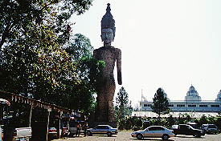
作りかけながら入口にでっかい巨人像が建っている。この時点でヴィエンチャンのものよりもノーンカイの方がスケールが大きいということが分かる。屋台や土産物屋などにも活気がある。人出も多い。
で、ゲートを潜り、中に入ってみる。
ここもまた庭園風の造りである。しかし規模は大きい。ワットシェンクアン同様不気味なコンクリート彫刻のオンパレードである。
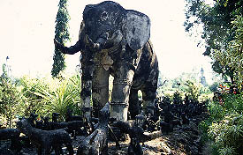 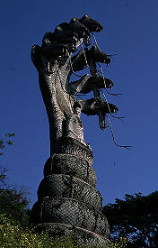
象さん、蛇さんに始まり、女神なのか魔女なのか観音様なのか判別し難い巨大女性像、大仏・・・
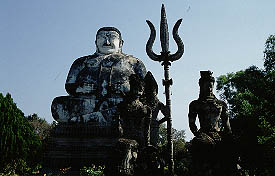 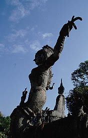 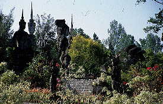
ワットシェンクアンに比べ、こちらの方が像の大きさもスケールアップしている。そしてコンクリート彫刻といいながら、彫刻の細かさもレベルアップしている。とくに各仏像の衣装や装飾品のバラモン風なデザインの細工はかなりのモノである。
はっきりいってコンクリ彫刻でこれほど緻密な彫刻を私は知らない。製作時の気合いの入り方も凄いが、メインテナンスの方も相当な金がかかっていると思われる。
これはヴィエンチャンでの布教活動よりもノーンカイでの布教活動の方が資金は集まったと見るべきか。
それでも、園内を歩いていると幻想大王ルアン・プーの脳味噌の膿のような副産物がところどころに見られる。
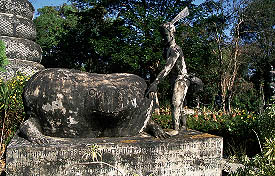一体なんなんだ、コレ。
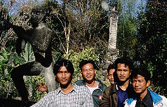猿のチンコとの記念写真を強要するタイの若者達。
と、突然ゆる〜い音楽がフルボリュームで流れ出す。そのサウンドは何と言うか・・・タイポップスのイントロの4小節だけが延々繰り返されるもの。このゆる〜いミニマルサウンドは結局ここを出ていくまで続いていた・・・頭狂いそうになりました・・・
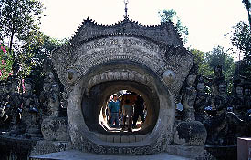
そうこうしている内に、謎のゲートに行き当たる。
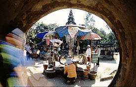 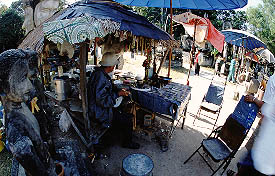
潜って中に入ってみると、今にも崩れ落ちそうな土産物屋の向こうにはあのワットシェンクアンにもいた「三面手六本仏」が！
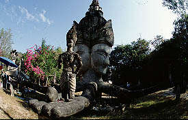
これってもしかしてルアン・プーのシンボルですかあ？
でも、チョット御意見させてもらいます。コレは回った方が絶対面白い！電動回転「三面手六本仏」をリクエストいたしますっ！もちろん「手乗り可」でヨロシク！
・・・「三面手六本仏」を囲むように摩訶不思議なオブジェが並ぶ。
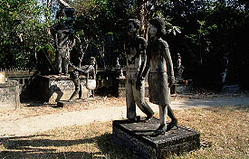
嬉しいのか悲しいのか良く分からないカップル。そもそも何のために存在するのかも良く分からない。
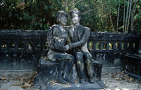 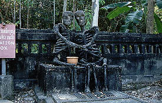
こちらのカップルは同じポーズのまま白骨化。この辺は何となく分かりやすいね。
で、崩れ落ちそうな土産物屋で絵葉書をゲット。
で、さらに様々な大仏やら女神やらの群れを眺めながら池にいたる。ちなみにこの間もゆる〜いサウンドはず〜〜〜〜っと垂れ流しっ放し。
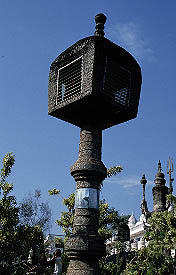 この脳髄溶解サウンドの発生源はこちら。
で、池の売店で魚の餌を購入。池に放り投げてみると現れたのはナマズ。しかも推定千匹。
すっかり背筋を寒くしてやっと本堂へ。
中には正面にタイ式の仏像、右に中国風、左にインド風。
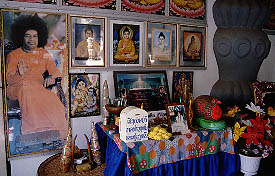
「あの人」の写真もありました。
で、ここにもお土産コーナーがあり、1枚の生写真が目に入った。
何やらUFOのようなド派手なカプセルが鎮座しているもので、土産屋のおばちゃんに聞けばルアン・プーだ、という。よ〜くみるとカプセルの中には人のようなものが見える。
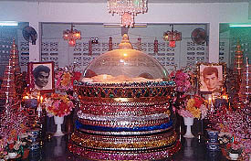
え、じゃあコレ、ルアン・プーのミイラなの？ルアン・プーって死んでたの？
おばちゃんの話によるとルアン・プーは1996年に死亡し、現在はこのド派手なカプセルの中に安置されているとの事。で、このカプセルはどこにあるの？と聞くと、おばちゃん黙って上を指さす。
よっしゃあ、じゃあ2階に行ってみっかあ！と階段を登ろうとすると、そのおばちゃんが一般人は2階には行けないと言う。う〜ん残念。ここは引き下がるか。
仕方なく、本堂の外に出る。
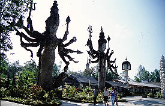 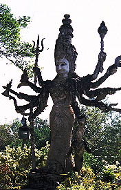 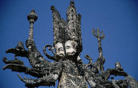
そこにもバラモンチックな巨像が幾つか並んでおり、その細工の細かさに圧倒される。
話によると100人以上の信者がルアン・プーの遺志をついで現在も制作を続けているらしい。
まったく頭の下がる思いである。
このへんで驚異の幻想庭園、ワットケークツアーは終了。でも、脳髄溶解サウンドはまだ流れたまま。
恐るべし幻想大王ルアン・プーの洗脳マジック・・・
結論としてヴィエンチャンの方はプロトタイプとしての面白さがあり、ノーンカイの方はそれをスケールアップさせたアクロバティックな面白さがあって、両方とも非常に面白かった。
特にヴィエンチャンの「腐ったみかん」はサイコーでした。
珍寺大道場 HOME